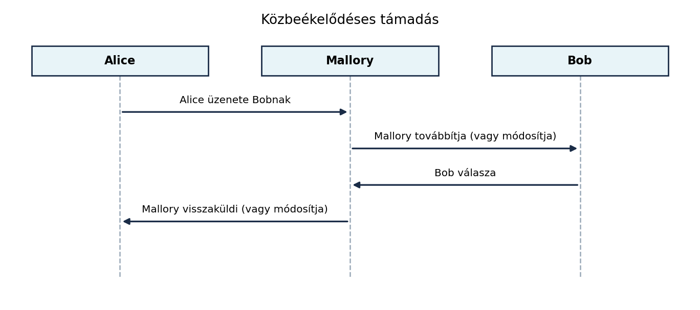

Amikor egy HTTPS-kapcsolat felépül a böngésződ és a bankod szervere között, a biztonsági elemzés nem kezdődhet azzal, hogy „feltesszük, a támadó semmit sem tud csinálni”. Azt kell megkérdeznünk: ki a támadó, mit tud, és mit akar elérni? Ha ezt nem fogalmazzuk meg pontosan, akkor vagy alábecsüljük a fenyegetést, és a rendszerünk összeomlik egy olyan támadással szemben, amire nem készültünk, vagy túlbecsüljük, és feleslegesen drága, lassú megoldást építünk. A támadómodell éppen ezt a kérdést teszi fel: milyen adatokhoz fér hozzá a támadó, milyen műveleteket végezhet, és mi a célja? Ebben az alfejezetben felépítjük a támadómodellek pontos nyelvét, és bevezetjük a kriptográfia egyik legfontosabb elvét: Kerckhoffs elvét.
A legegyszerűbb kép az aktív támadó megértésére a közbeékelődéses támadás (man-in-the-middle, MITM). Alice Bobbal akar biztonságosan beszélni, de Mallory a kommunikációs csatorna közepén áll. Alice azt hiszi, hogy Bobbal beszél, Bob pedig azt hiszi, hogy Alice-szel – valójában mindketten Malloryval kommunikálnak. Mallory lehallgathatja, módosíthatja, törölheti vagy késleltetheti az üzeneteket, sőt saját üzeneteket is beszúrhat.

A fenti ábra azt mutatja, hogy Mallory nem egyszerűen lehallgat, hanem két független csatornát tart fenn. Ez a kép segít megérteni, miért nem elég a titkosítás önmagában: ha Alice és Bob nem hitelesítik egymást, a titkosított üzenet is átmehet Mallory kezén. A pontos védekezést a Közbeékelődés, hitelesített kulcscsere és kis alcsoportú támadások és a Tanúsítványok és az X.509 alfejezetekben tanuljuk meg.
A támadómodelleket két dimenzió mentén osztályozzuk: mit tud a támadó, és mit akar elérni. Az első dimenzió a képességek, a második a cél. Cél lehet például a titkos kulcs megszerzése, a nyílt szöveg megismerése, az integritás megsértése, vagy akár a biztonsági tulajdonságok teljes megkerülése. A képességeket a következő klasszikus kategóriákba soroljuk.
Definíció. Legyen egy szimmetrikus titkosítási séma titkosító és visszafejtő függvénnyel, ahol a titkos kulcs. A támadó rendelkezésére álló adatokat a következő modellek írják le:
Ciphertext-only attack (COA) – csak rejtett szöveg alapú támadás. A támadó csak rejtett szövegeket ismer: , ahol ismeretlen üzenetekre. Célja az üzenetek tartalmának vagy a kulcsnak a megismerése.
Known-plaintext attack (KPA) – ismert nyílt szövegű támadás. A támadó ismer bizonyos összetartozó nyílt szöveg–rejtett szöveg párokat: , ahol . A párok lehetnek véletlenek vagy a támadó által nem választhatók. Célja a kulcs vagy további üzenetek megfejtése.
Chosen-plaintext attack (CPA) – választott nyílt szövegű támadás. A támadó választhat nyílt szövegeket , és megkapja a hozzájuk tartozó rejtett szövegeket. A választás történhet adaptívan, azaz a támadó egy korábbi rejtett szöveg ismeretében választhatja a következő nyílt szöveget.
Chosen-ciphertext attack (CCA) – választott rejtett szövegű támadás. A támadó választhat rejtett szövegeket , és megkapja a hozzájuk tartozó nyílt szövegeket, kivéve azt a kihívás rejtett szöveget, amelyet a támadó meg akar fejteni. Az adaptív változatban a támadó az előző visszafejtések eredményét felhasználva választhatja a következő rejtett szöveget.
A fenti felsorolás erősség szerint növekvő sorrendben van: a COA a leggyengébb, a CCA a legerősebb támadó. Ha egy séma CCA-biztonságos, akkor automatikusan COA-biztonságos is; a fordított irány nem igaz. A pontos, játékalapú definíciókat a Játékalapú definíciók és a támadó előnye, az IND-CPA-t a Szemantikai biztonság és IND-CPA, az IND-CCA-t pedig az IND-CCA és a malleabilitás alfejezetben formalizáljuk. A klasszikus rejtjelek kriptanalízise során is ezeket a modelleket használjuk; például a gyakoriságelemzéses támadás a Helyettesítéses rejtjel és gyakoriságelemzés alfejezetben COA támadás.
Passzív és aktív támadó. A passzív támadó (gyakran Eve) csak megfigyeli a kommunikációt: lehallgatja a csatornán áthaladó üzeneteket, de nem avatkozik be. Az aktív támadó (Mallory) ezen felül módosíthatja, törölheti, késleltetheti vagy újra lejátszhatja az üzeneteket, sőt teljesen új üzeneteket is beszúrhat. A passzív támadó a COA és – ha ismert tartalmú üzenetek is áthaladnak – a KPA helyzetet tudja kihasználni; CPA-hoz a támadónak el kell érnie, hogy általa választott üzenetet titkosítsanak (például csomag- vagy szkriptbecsempészéssel), CCA-hoz pedig visszafejtési hozzáféréshez (orákulumhoz) kell jutnia – ezek aktív képességek.
Definíció. Közbeékelődéses támadás (man-in-the-middle, MITM). Egy protokoll során a támadó a két fél közötti kommunikációt úgy irányítja, hogy mindkét fél azt hiszi, közvetlenül a másikkal beszél, valójában azonban mindketten a támadóval kommunikálnak. A támadó két független csatornát tart fenn, és szabadon olvashatja, módosíthatja vagy helyettesítheti a továbbított üzeneteket.
A támadómodell egy tágabb fenyegetési modell (threat model) része, amely nemcsak a támadó képességeit, hanem három alapkérdést is rögzít:
Példa. Egy wifi-hálózat esetében a passzív támadó a közelben ül és rögzíti a forgalmat (COA). Ha a csomagok bizonyos részei előre ismertek (például WEP-nél minden adatcsomag rögzített LLC/SNAP fejléccel kezdődik), akkor a rögzített forgalomból ismert nyílt szöveg–rejtett szöveg párok nyerhetők: ez KPA. Ha a hálózat WEP-titkosítást használ, akkor a támadó aktívan is beavatkozhat: a WEP protokoll lehetővé teszi a CPA-t, mert a támadó bizonyos csomagokba saját maga által választott adatot csempészhet, és megfigyelheti a titkosított változatot. Ez a gyengeség vezetett a WEP összeomlásához.
Példa. Egy webes alkalmazás a felhasználói jelszavakat titkosítva tárolja egy adatbázisban. Ha a támadó hozzáfér az adatbázishoz, akkor COA-t hajthat végre a rejtett szövegen. Ha azonban az alkalmazás rendelkezik egy „elfelejtett jelszó” funkcióval, amely a titkosított jelszó visszafejtését végzi, és a támadó ezt a funkciót is eléri, akkor CCA-t hajthat végre: módosított rejtett szövegeket küld be, és a hibaüzenetekből vagy a visszafejtés eredményéből következtetéseket von le. Az ilyen típusú támadásokat a Kitöltés és a padding oracle támadás alfejezetben tárgyaljuk részletesen.
Figyelem. Ez a tervezés eleve hibás: jelszót nem titkosítva, hanem sózott, lassú jelszó-hash-sel tárolunk (lásd a Jelszótárolás: só, PBKDF2 és bcrypt alfejezetet), és az „elfelejtett jelszó” funkció új jelszó beállítására szolgáló egyszer használatos linket küld, nem a régi jelszót.
A XIX. században Auguste Kerckhoffs holland kriptográfus írta le azt az alapelvet, amely ma is a modern kriptográfia egyik sarokköve.
Definíció. Kerckhoffs elve. A kriptorendszer biztonsága nem függhet a titkosítást végző algoritmus titkosságától; a rendszer egyetlen titkos eleme a kulcs lehet. Az algoritmusnak nyilvánosnak, leírhatónak és szabadon elemezhetőnek kell lennie.
A „biztonság a homály által” (security through obscurity) kudarca több okból is törvényszerű:
Megjegyzés. Kerckhoffs elve nem azt mondja, hogy a kulcsot nyilvánossá kell tenni. Éppen ellenkezőleg: a kulcs az egyetlen titkos elem. A gyakorlatban ezért a kulcsot véletlenszerűen, megfelelő hosszúsággal kell generálni, és biztonságosan kell tárolni. A kulcsgenerálás hibáiról a Kriptográfiai véletlenszám-generátorok a gyakorlatban és a Véletlenszám-hibák alfejezetekben lesz szó.
A történelem többször igazolta Kerckhoffs elvét. Két tanulságos példát említünk, kerülve a túlzott részleteket; a lényeg a tanulság, nem az incidensek krónikája.
A GSM mobiltelefon-rendszer hangtitkosítására használt A5/1 algoritmus a kezdetekben titkos volt. A tervezők arra számítottak, hogy az algoritmus titkossága elegendő védelmet nyújt. A visszafejtés azonban nem maradt el: amint a kriptográfiai közösség megismerte az algoritmus szerkezetét, világossá vált, hogy a tényleges biztonsági szint jóval alacsonyabb a tervezettnél. Az A5/1 elleni támadások ma már gyakorlati valós időben futnak; az algoritmus titkossága semmit sem védett meg.
A Mifare Classic kontaktus nélküli kártyákat tömegközlekedési jegyekhez és beléptető rendszerekhez használták. A kártya által használt titkosítási algoritmus titkos volt, és a gyártó jogi lépésekkel próbálta megakadályozni a közzétételt. A független kutatók azonban visszafejtették a kártya áramköri viselkedését, és az algoritmus gyengeségeit feltárva teljes kulcsvisszafejtési támadásokat mutattak be. A rendszer bukása nem azért következett be, mert valaki ellopta az algoritmust, hanem mert az algoritmus gyenge volt, és a titkosság megakadályozta a nyilvános elemzést.
Mindkét esetben a tanulság ugyanaz: a biztonságnak nem a titokban tartott algoritmusra, hanem a jól elemzett, nyilvános algoritmussal használt erős kulcsra kell épülnie. A modern szabványosítási folyamatok – például az AES, a SHA-3 vagy a posztkvantum ML-KEM kiválasztása – éppen ezért nyílt pályázaton, a kriptográfiai közösség bevonásával történnek.
Saját titkos algoritmus használata. A kezdő fejlesztő gyakran azt hiszi, hogy ha senki sem ismeri a saját „titkosítási” eljárását, az biztonságos. Ez a „biztonság a homály által” esete, és közvetlenül ellentmond Kerckhoffs elvének. A helyes gyakorlat: használj bevált, nyilvános, szabványosított algoritmust (AES, ChaCha20, SHA-256), és minden erőfeszítést a kulcs védelmére fordíts.
Támadómodell alábecsülése. Ha egy rendszertervező csak passzív lehallgatóval számol, de a valós támadó aktív – például módosíthatja az üzeneteket –, akkor a rendszer ki lesz téve közbeékelődéses vagy módosítási támadásoknak. A titkosítás önmagában nem ad integritást; ha az üzenetet nem hitelesítik, a támadó a rejtett szöveget megváltoztathatja, és a visszafejtés hamis üzenetet ad. A helyes gyakorlat: mindig fogalmazzuk meg, mit tudhat a támadó, és használjunk hitelesített titkosítást (AEAD).
A Kerckhoffs-elv félreértése – a kulcs nyilvánossá
tétele. Kerckhoffs elve nem azt jelenti, hogy minden nyilvános,
hanem azt, hogy csak a kulcs marad titokban. A kulcsot
soha ne ágyazd be a forráskódba, ne küldd el e-mailben, ne generáld a
random modullal; használj secrets modult vagy
os.urandom-ot.
A CCA támadás figyelmen kívül hagyása. A fejlesztők gyakran úgy gondolják, hogy a támadó soha nem tudja elérni a visszafejtő funkciót. A valóságban a hibaüzenetek, a padding-ellenőrzés vagy az időzítés különbségei elegendőek lehetnek. A CBC-mód padding oracle támadása (lásd a Kitöltés és a padding oracle támadás alfejezetet) tipikus példája ennek: a szerver a hibás kitöltésre más üzenetet ad, mint a jó kitöltésre, és ez elég a CCA-támadáshoz.
A válaszokat a Megoldások szakasz elején, az „Önellenőrzés – válaszok” alcím alatt találod.
1. feladat (A) Rendezd erősség szerint növekvő sorrendbe a következő támadókat: CPA, COA, CCA, KPA. Indokold a sorrendet azzal, hogy mit tud az adott támadó.
2. feladat (A) Adj példát passzív és aktív támadóra egy egyszerű e-mail rendszerben, ahol a leveleket PGP-szerű titkosítással védik. Milyen támadást tud végrehajtani a passzív, és milyet az aktív támadó?
3. feladat (B) Egy fejlesztő azt állítja: „Az algoritmusom biztonságos, mert a forráskód nem nyilvános, és ki van obfuszkálva.” Értékeld ezt az állítást Kerckhoffs elve alapján! Milyen hátrányai vannak a titkos algoritmusnak?
4. feladat (B) Egy katonai kommunikációs rendszerben minden reggel 06:00-kor az állomás az alábbi üzenetet küldi: „Minden rendben. Várjuk a jelentést.” A támadó lehallgatja a titkosított csatornát, és rögzíti a rejtett szöveget. Másnap a támadó azt is észreveszi, hogy ugyanaz a rejtett szöveg bukkan fel, mint előző nap. Milyen támadásra ad ez lehetőséget? Milyen következtetést vonhat le a támadó, és milyen támadómodellnek felel meg?
5. feladat (C) Tegyük fel, hogy egy titkosítási séma CPA-biztonságos, azaz a támadó akkor sem tudja megkülönböztetni két választott nyílt szöveg rejtett szövegét, ha korábban tetszőleges nyílt szövegekre kérhetett rejtett szöveget. Mutasd meg, hogy ebből következik a KPA-biztonság: ha lenne egy olyan támadó, amelyik KPA alatt megtöri a sémát, akkor abból lehetne készíteni egy támadót, amelyik CPA alatt töri meg. (Útmutatás: hogyan használja a CPA-képességét ahhoz, hogy a KPA-támadó számára a szükséges nyílt szöveg–rejtett szöveg párokat generálja?)
6. feladat (D – alkalmazás) Tervezz egy játékban egy naiv kulcscsere-protokollt: Alice és Bob mindketten generálnak egy titkos véletlen számot, elküldik egymásnak nyílt csatornán, majd ezekből XOR-művelettel közös kulcsot számítanak. (Ez a protokoll nyilvánvalóan gyenge, de a feladat célja a támadás elemzése.) Milyen támadást tud végrehajtani egy passzív, és milyet egy aktív támadó? Írd le a MITM támadás lépéseit, és mondd ki, miért nem elegendő a titkosítás önmagában itt.
Igaz. Ha a séma CPA-biztonságos, akkor a támadó akkor sem tudja megkülönböztetni a rejtett szövegeket, ha tetszőleges nyílt szövegre kérhet titkosítást. A KPA-támadó csak kevesebbet tud: csak bizonyos, nem általa választott nyílt szöveg–rejtett szöveg párokat ismer. Ezért minden, ami CPA alatt biztonságos, az KPA alatt is biztonságos; a fordított irány általában nem igaz, a CPA-biztonság a magasabb követelmény.
Példa: webes banki alkalmazás. COA: a támadó
lehallgatja a hálózati forgalmat, és csak titkosított adatokat lát. KPA:
a támadó tudja, hogy a HTTP-kérés eleje mindig
GET / HTTP/1.1 kezdetű, így ismer néhány nyílt
szöveg–rejtett szöveg párt. CPA: a támadó be tud csempészni a
böngészőjébe egy szkriptet, ami a titkosított csatornán keresztül az ő
által választott adatot küld a banknak. CCA: a támadó módosított rejtett
szöveget küld a banknak, és a hibaüzenetből következtet.
A passzív támadó csak megfigyel, nem változtatja meg az üzeneteket; az aktív támadó módosíthat, törölhet, beszúrhat. MITM-et csak az aktív támadó tud végrehajtani, mert a támadáshoz üzeneteket kell továbbítania, késleltetnie vagy módosítania.
Kerckhoffs elve: a rendszer biztonsága nem függhet az algoritmus titkosságától; csak a kulcs maradhat titkos. A „biztonság a homály által” azért bukik meg, mert a titok előbb-utóbb kiszivárog vagy visszafejthető, és utána semmilyen védelem nem marad; emellett a titkos algoritmust nem lehet függetlenül elemezni.
A helyes állítás: csak a kulcs maradhat titkos. A Kerckhoffs-elv nem teszi a kulcsot nyilvánossá, mert akkor a biztonság teljesen megszűnne.
Azért, mert a titok érzékenységének időtávja meghatározza a szükséges védelmet. Egy rövid életű tranzakcióhoz elég lehet 128 bites biztonság, de egy évtizedekig érzékeny dokumentum védelméhez nagyobb kulcsméret vagy posztkvantum-biztos algoritmus kellhet, különben a jövőbeli támadó visszafejtheti a ma rögzített adatot.
A helyes sorrend: COA < KPA < CPA < CCA. Indoklás: - COA: a támadó csak rejtett szöveget lát. - KPA: ezen felül ismer néhány nyílt szöveg–rejtett szöveg párt. - CPA: a támadó választhatja a nyílt szöveget, amire titkosítást kap, így több ellenőrzött párt kap. - CCA: a támadó ezen felül a visszafejtést is kérheti, ami a legerősebb képesség.
Passzív támadó: lehallgatja az e-mail forgalmat, rögzíti a titkosított leveleket. COA-t hajthat végre, vagy ha ismeri a tipikus levélformát, KPA-t. Aktív támadó: módosíthatja a titkosított levelet, mielőtt az a címzetthez ér; ha nincs integritásvédelem, a címzett hamis levelet fejt vissza. Emellett aktív támadó végrehajthat MITM-et is.
Az állítás a „biztonság a homály által” esete. Kerckhoffs elve szerint a biztonság nem függhet az algoritmus titkosságától. Hátrányok: - Ha a kód kiszivárog vagy visszafejtik, az egész biztonság megszűnik. - A titkos algoritmust nem elemzik független szakértők, így a hibák rejtve maradnak. - Ha az algoritmus kiszivárog, nem elég kulcsot cserélni: az egész algoritmust le kell cserélni (és minden telepített példányát). A helyes gyakorlat: nyilvános, szabványosított algoritmus használata, és a biztonság a kulcs titkosságára építése.
Már csak rejtett szöveg alapján (COA) is: ha a titkosítás determinisztikus, az azonos rejtett szöveg azonos nyílt szöveget jelez, így a támadó észleli, hogy „semmi nem változott”, és ha egyszer eltérő rejtett szöveget lát, tudja, hogy rendkívüli üzenet érkezett. Ha a rutinüzenet szövegét kitalálja vagy ismeri (például egy elfogott naplóból), akkor ismert nyílt szövegű (KPA) helyzetben van: van egy ismert párja. Védekezés: véletlenített (nonce-os) titkosítás, amelynél ugyanaz az üzenet minden alkalommal más rejtett szöveget ad – ez a Szemantikai biztonság és IND-CPA alfejezet követelménye.
A feladat redukciós gondolat. Tegyük fel, hogy egy KPA-támadó, amely adott párokból meg tudja törni a sémát. Az CPA-támadó így jár el: az az üzeneteket pontosan abból az eloszlásból mintavételezi, amelyből a KPA-modellben az ismert párok származnak (például egyenletesen), és a titkosító orákulumtól megkapja a rejtett szövegeket, majd ezeket a párokat adja át -nak. Így nézete azonos eloszlású a valódi KPA-kísérletével (tökéletes szimuláció). Ezután lefuttatja -t a kapott párokkal, és annak kimenetét változatlanul továbbítja; ezért sikerének valószínűsége és előnye megegyezik. Ezért ha a séma CPA-biztonságos, akkor nem létezhet ilyen , tehát KPA-biztonságos is.
A naiv protokoll: 1. Alice generál egy titkos véletlen számot, Bob egy titkos véletlen számot. 2. Alice elküldi -t Bobnak, Bob elküldi -t Alice-nek nyílt csatornán. 3. Mindketten kiszámítják -t.
Már a passzív támadó is megtöri a protokollt: Eve lehallgatja -t és -t, és kiszámítja -t. A protokoll tehát még lehallgatás ellen sem véd; ehhez olyan konstrukció kell, amelyben a nyilvános üzenetekből a közös kulcs nem számolható ki hatékonyan – ez az A Diffie–Hellman-kulcscsere célja. Ha ezt meg is oldjuk, az aktív támadó ellen a hitelesítés hiánya miatt MITM is működik. Mallory két külön kulcscserét hajt végre: - Alice-szel szemben ő lesz a „Bob”: Alice elküldi -t, ő pedig egy saját számot küld vissza; így Alice-szel közös kulcsuk lesz. - Bobbal szemben ő lesz az „Alice”: Bob elküldi -t, ő pedig egy saját számot küld; Bobbal közös kulcsuk lesz. - Mallory ezután a kulccsal megfejti Alice üzeneteit, elolvassa, módosíthatja, majd a kulccsal újra titkosítja, és továbbítja Bobnak. Vice versa.
A támadás azért lehetséges, mert a protokoll nem hitelesít: Alice nem tudja, hogy valójában ki a másik fél. A titkosítás önmagában nem oldja meg a kulcscsere hitelességét; ehhez hitelesített kulcscserére van szükség, amilyen az A Diffie–Hellman-kulcscsere hitelesített változata, és amit részletesen a Közbeékelődés, hitelesített kulcscsere és kis alcsoportú támadások alfejezetben tárgyalunk.
A támadómodell a kriptográfiai elemzés alapja: pontosan rögzíti, hogy a támadó mit tud és mit akar elérni. A klasszikus képességi szintek: COA (csak rejtett szöveg), KPA (ismert nyílt szöveg–rejtett szöveg párok), CPA (választott nyílt szövegű titkosítás), és CCA (választott rejtett szövegű visszafejtés). A passzív támadó (Eve) csak megfigyel, az aktív támadó (Mallory) módosíthat, törölhet, beszúrhat; a közbeékelődéses támadás (MITM) az aktív támadó eszköze, amikor két fél között független csatornákat tart fenn. Kerckhoffs elve szerint a biztonság nem függhet az algoritmus titkosságától, csak a kulcs maradhat titkos; a homály általi biztonság kudarcra van ítélve, amint azt az A5/1 és a Mifare Classic esete is mutatja. A támadómodelleket a klasszikus kriptanalízis (Eltolásos és affin rejtjelek), a játékalapú definíciók (Játékalapú definíciók és a támadó előnye), az IND-CPA (Szemantikai biztonság és IND-CPA) és az IND-CCA (IND-CCA és a malleabilitás) használják; a MITM-t a Közbeékelődés, hitelesített kulcscsere és kis alcsoportú támadások és a Tanúsítványok és az X.509 alfejezetek fejtik ki.
Ez az alfejezet nem támaszkodik konkrét, ellenőrzött webes forrásra; a támadómodellek és Kerckhoffs elve alapvető, stabil kriptográfiai tudás, amelyet a szakterület standard tankönyvei (pl. Katz–Lindell, Boneh–Shoup, Menezes–van Oorschot–Vanstone) tárgyalnak. Az A5/1 és a Mifare Classic említése jól ismert esettanulmány, de pontos évszámot, verziószámot vagy költségadatot nem adunk meg ellenőrzött hivatkozásként; ezeket az olvasó a megfelelő kriptográfiai szakirodalomban ellenőrizheti. A fenyegetésmodellezési módszertanok (például STRIDE) teljes bemutatása meghaladja e könyv kereteit; a kriptográfiai szempontból releváns protokollszintű hibákat a Protokollszintű hibák: visszaminősítés, bemenetellenőrzés, kontextuskötés alfejezet tárgyalja.